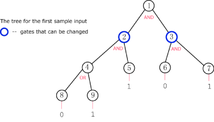

For this problem we will consider a type of binary tree that we will call a boolean tree. In this tree, every row is completely filled, except possibly the last (deepest) row, and the nodes in the last row are as far to the left as possible. Additionally, every node in the tree will either have 0 or 2 children.
What makes a boolean tree special is that each node has a boolean value associated with it, 1 or 0. In addition, each interior node has either an "AND" or an "OR" gate associated with it. The value of an "AND" gate node is given by the logical AND of its two children's values. The value of an "OR" gate likewise is given by the logical OR of its two children's values. The value of all of the leaf nodes will be given as input so that the value of all nodes can be calculated up the tree.
The root of the tree is of particular interest to us. We would really like for the root to have the value V, either 1 or 0. Unfortunately, this may not be the value the root actually has. Luckily for us, we can cheat and change the type of gate for some of the nodes; we can change an AND gate to an OR gate or an OR gate to an AND gate.
Given a description of a boolean tree and what gates can be changed, find the minimum number of gates that need to be changed to make the value of the root node V. If this is impossible, output "IMPOSSIBLE" (quotes for clarity).
The first line of the input file contains the number of cases, N. N test cases follow.
Each case begins with M and V. M represents the number of nodes in the tree and will be odd to ensure all nodes have 0 or 2 children. V is the desired value for the root node, 0 or 1.
M lines follow describing each of the tree's nodes. The Xth line will describe node X, starting with node 1 on the first line.
The first (M−1)/2 lines describe the interior nodes. Each line contains G and C, each being either 0 or 1. If G is 1 then the gate for this node is an AND gate, otherwise it is an OR gate. If C is 1 then the gate for this node is changeable, otherwise it is not. Interior node X has nodes 2X and 2X+1 as children.
The next (M+1)/2 lines describe the leaf nodes. Each line contains one value I, 0 or 1, the value of the leaf node.
To help visualize, here is a picture of the tree in the first sample input.

For each test case, you should output:
Case #X: Y
where X is the number of the test case and Y is the minimum number of gates that must be changed to make the output of the root node V, or "IMPOSSIBLE" (quotes for clarity) if this is impossible.
Time limit: 30 seconds per test set.
Memory limit: 1GB.
1 < N ≤ 20
2 < M < 30
2 < M < 10000
2 9 1 1 0 1 1 1 1 0 0 1 0 1 0 1 5 0 1 1 0 0 1 1 0
Case #1: 1 Case #2: IMPOSSIBLE
In case 1, we can change the gate on node 3 to an OR gate to achieve the
desired result at the root.
In case 2, only the root can be changed but changing it to an OR gate does
not help.